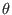
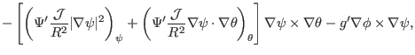

Flux Surface Functions
Next, examine the meaning of the following volume integral
where the volume
, which is the volume within the magnetic
surface labeled by  . Using
. Using
 , the quantity
, the quantity
 can be further written as
can be further written as
Note that  is not a single-value function of the spacial points. In
order to evaluate the integration in Eq. (219), we need to select
one branch of , which can be chosen to be
. Note that function
is not continuous in the
vicinity of the contour of
 . Next, we want to use the Gauss's
theorem to convert the above volume integration to surface integration. Noting
the discontinuity of the integrand
in the vicinity of the
contour of
, the volume should be cut along the contour, thus,
generating two surfaces. Denote these two surfaces by and
. Next, we want to use the Gauss's
theorem to convert the above volume integration to surface integration. Noting
the discontinuity of the integrand
in the vicinity of the
contour of
, the volume should be cut along the contour, thus,
generating two surfaces. Denote these two surfaces by and  , then
equation (219) is written as
, then
equation (219) is written as
where the direction of surface is in the negative direction of ,
the direction of is in the positive direction of , and the
surface is the toroidal magnetic surface
. The surface
integration through is obviously zero since
 lies in this
surface. Therefore, we have
lies in this
surface. Therefore, we have
Eq. (220) indicates that is  times the magnetic flux
through the surface. Thus, the poloidal flux through is written as
times the magnetic flux
through the surface. Thus, the poloidal flux through is written as
Using the expression of the volume element
,  can be further written in terms of flux surface
averaged quantities.
can be further written in terms of flux surface
averaged quantities.
Note that the sign of the Jacobian appears in Eq. (222), which is
due to the positive direction of surface is determined by the positive
direction of , which in turn is determined by the sign of the Jacobian
(In my code, however, the positive direction of is chosen by me and
the sign of the Jacobian is determined by the positive direction of ).
We can verify the sign of Eq. (222) is exactly consistent with that
in Eq. (19).
Similarly, the toroidal flux within a flux surface is written as
the poloidal current within a flux surface is written as
and toroidal current within a flux surface is written as
 |
(225) |
(**check**)The toroidal magnetic flux is written as
Next, calculate the derivative of the toroidal flux with respect to the
poloidal flux.
|
 |
|
|
| |
|
|
(228) |
Comparing this result with Eq. (471) indicates that it is equal to
the safety factor, i.e.,
By using the contravariant representation of current density (331),
the poloidal current within a magnetic surface is written as
Note that the poloidal current is proportional to  , which explains why
is sometimes called poloidal current function in tokamak literature.
, which explains why
is sometimes called poloidal current function in tokamak literature.

The toroidal current is written as
The last equality is due to
at . By using the flux
surface average operator, Eq. (231) is written
Next, calculate another useful surface-averaged quantity,
The differential with respect to and the integration with respect to
can be interchanged, yielding
yj
2018-03-09